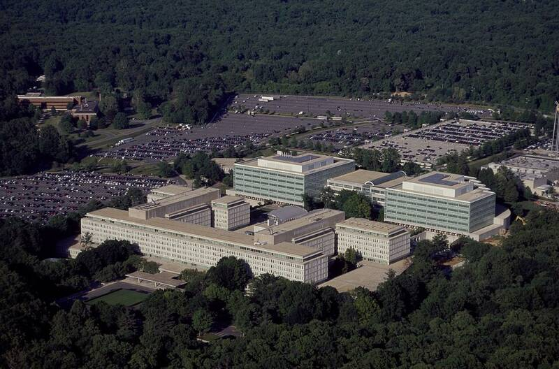

CIA headquarters
Langley, VA

The Central Intelligence Agency, part of the intelligence community that feeds UAP reporting. 1
Open in the interactive Watcher
Sources
- Central Intelligence Agency Wikipedia
Langley, VA

The Central Intelligence Agency, part of the intelligence community that feeds UAP reporting. 1
Open in the interactive Watcher